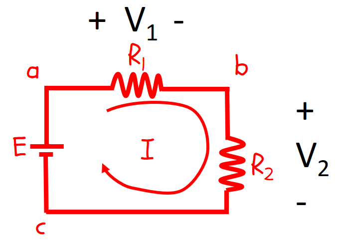

HOME BLOG EBOOKS ABOUT CONTACT SHOP
German physicist Gustav Kirchoff developed 2 of the most fundamental laws in Circuit theory known as the Kirchhoff’s Law’s. First of these laws is the Kirchoff's Voltage law, which we will discuss here. The other is the Kirchoff's Current law.The entire basis of Circuit analysis are these 2 laws and the Ohm’s law. They are basically spin offs to the energy and charge conservation laws.
Kirchhoff’s voltage law (KVL) states that “the algebraic sum of the potential rises and drops around a closed loop (or path) is zero” i.e.
In layman’s terms Kirchhoff’s voltage law essentially means: “Voltage supplied = Voltage used up, around a closed loop”.
Forming a KVL equation is really easy; start at a certain point of the circuit and note down all the potential changes (either rises or drops) in one particular direction till the starting point is reached once again. Then equate the resulting expression to zero. That’s it!

For the above Circuit, KVL equation is E –V1 –V2 = 0 or E (Voltage supplied) = V1 +V2 (Voltage used up). Do note that KVL is applicable to all loops or closed paths, however complex the circuit maybe.